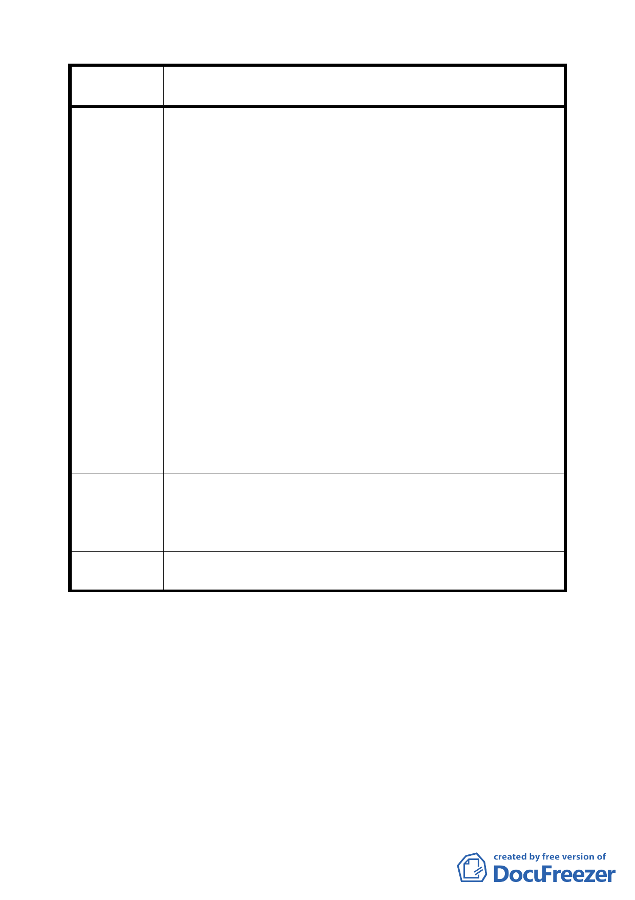

案 名 臺北市文山區都市計畫通盤檢討（細部計畫）案
二、 按都市計畫於規劃劃定適用「建築要點」地區，乃考量
整體性以維水土保持及自然景觀風貌，而根據瞭解其作
業係以航測圖等高線狀況作區域性之劃定，對於獨立小
面積之山坡地由於不具預期效果一般而言，均不予考量
列入，此可於內湖東湖社區、文山地區之都市細部計畫
案，准此，陳情地為一獨立小山頭，海拔 21.74M，其
與相鄰平地海拔 13M，相差約 9M 高，其坡形為側面陡
峭，山頂為一平台，依規劃原則應可不列入「建築要點」
範圍，此為理由一。
三、 系爭土地被劃歸適用「建築要點」地區，依據規定，其
山頂平台部分乃得容許建築，准此，將產生二項甚為不
合理現象，其一為由平地連通山頂之出入道路坡度難以
克服問題，其二為於平台上興蓋幾棟建築物，將破壞整
個地區自然景觀無遺，此為理由二。
四、 系爭土地側邊坡度陡峭，土壤遇雨容易遭沖蝕及崩塌，
具有潛在危險因子，極有可能危害相鄰平地住宅聚落及
本身建物，系爭土地如不受限而容許作坡地整地，降低
高度差，處理成和緩曲面，甚或整平，於公於私均為有
利，此為理由三。
一、 提請於通盤檢討時，將本陳情土地之使用分區由原住二
建議辦法
變更為住三。
二、 系爭土地無論從平面、公共安全、市容觀瞻、土地利用，
各種角度探討，均應廢除受「建築要點」限制。
委 員 會 議 關於第二種住宅區應受「臺北市山坡地開發建築要點」之管
決 議 制，屬全市性的通則，維持原計畫。
討論事項五
案名：擬劃定「臺北市中正區南海段三小段 690 地號等 38 筆土地
為更新單元」都市更新計畫案
說明：
一、本件係市府以 95 年 7 月 26 日府都新字第 09570894400 號函
送到會。
二、申請單位：梁徐宏、郭振欽。
四二